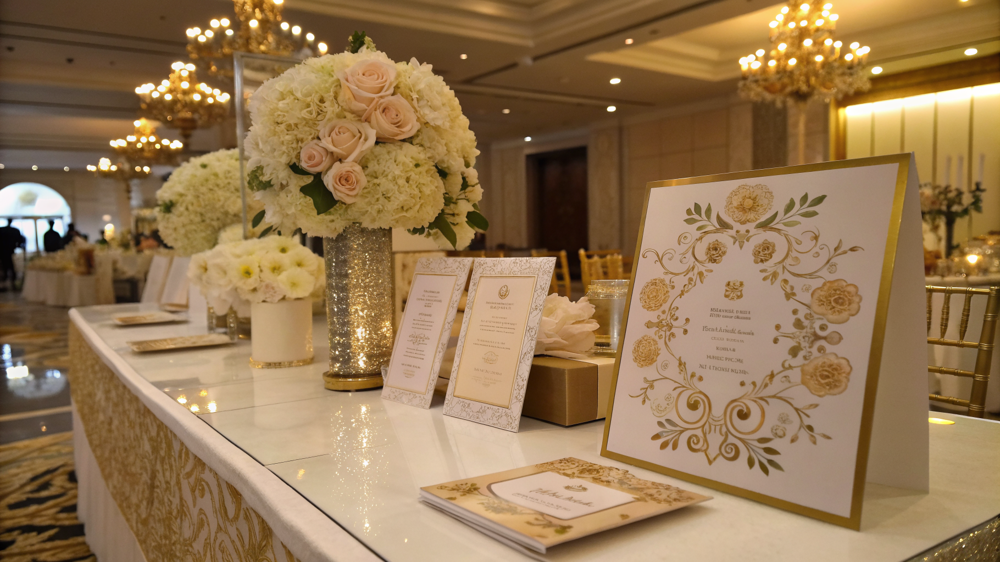

Come LOVE Partecipazioni Digitali rivoluziona la gestione eventi per Wedding Planner, Agenzie e Sposi

Innovazione e efficienza: LOVE Partecipazioni Digitali per Wedding Planner, Agenzie Eventi e Sposi
- Partecipazioni cartacee obsolete e costose con elevate complessità operative nella gestione delle intolleranze alimentari.
- Impatto di errori, costi e disorganizzazione nella gestione eventi per catering e RSVP tradizionali.
- LOVE Partecipazioni Digitali ottimizza l’esperienza con apertura 3D, Monogram Studio AI, gestione integrata RSVP ed export Excel per chef, migliorando efficienza e precisione.
Analisi approfondita della notizia e delle implicazioni operative
Il settore wedding e organizzazione eventi vive una trasformazione sempre più rapida verso soluzioni digitali avanzate, ma il nodo delle partecipazioni cartacee rimane un problema irrisolto per molti professionisti. Le partecipazioni tradizionali, oltre a generare costi considerevoli tra stampa, materiali pregiati e spedizioni, presentano difficoltà operative nella raccolta di informazioni fondamentali come RSVP e intolleranze alimentari.
Questa criticità non solo aumenta il lavoro manuale di Wedding Planner e agenzie, ma espone gli organizzatori a errori nella comunicazione con i fornitori, in particolare il catering, rischiando disorganizzazione e insoddisfazione degli sposi e degli invitati.
La notizia di settore sottolinea come l’adozione di tecnologie digitali dedicate possa migliorare la gestione del guest management, ma manca ancora una soluzione che integri la personalizzazione artistica e l’efficienza operativa.
Le conseguenze e i costi di non agire
Non superare la dipendenza dal cartaceo si traduce in un aumento di costi diretti e nascosti. La stampa di partecipazioni personalizzate richiede budget elevati, spesso senza garanzia di precisione nelle informazioni raccolte.
Inoltre, la gestione manuale delle intolleranze alimentari tramite telefonate o email genera confusione e rischi di errore nel trasmettere dati cruciali agli chef. Ciò può compromettere la qualità del servizio al ricevimento matrimonial e incidere negativamente sull’esperienza finale.
Il caos organizzativo si traduce in doppio lavoro per il team eventi, potenziali ritardi e difficoltà nel mantenere aggiornati tutti gli stakeholder, fattori che sottraggono tempo e risorse preziose e diminuiscono la competitività delle agenzie.
Come LOVE Partecipazioni Digitali risolve il problema
LOVE Partecipazioni Digitali nasce come soluzione nativa digitale, studiata per le esigenze di Wedding Planner, Agenzie Eventi e Sposi attenti all’eccellenza e all’efficienza. La piattaforma unisce estetica e tecnologia in un unico strumento semplice da adottare.
Le partecipazioni sono progettate come esperienze digitali d’autore con apertura 3D, capaci di emozionare gli invitati e digitalizzare il tradizionale momenti di consegna, riducendo drasticamente i costi di stampa e spedizione.
Il Monogram Studio AI consente la personalizzazione automatica e creativa delle partecipazioni, semplificando il lavoro dei designer e garantendo risultati unici e coerenti con l’identità degli sposi.
La gestione degli RSVP include strumenti specifici per segnalare intolleranze alimentari, raccolte in modo strutturato ed esportabili in file Excel condivisibili con lo chef, evitando errori umani e facilitando la pianificazione dei menù.
Infine, la spedizione ottimizzata tramite WhatsApp 1-Tap permette una diffusione rapida e semplice, migliorando i tassi di risposta e l’interazione con gli invitati.
| Gestione Tradizionale | Con LOVE Partecipazioni Digitali |
|---|---|
| Costi elevati di stampa e spedizione | Eliminazione dei costi cartacei con partecipazioni digitali d’autore |
| Raccolta manuale di RSVP e intolleranze, soggetta ad errori | Gestione digitale e integrata di RSVP e intolleranze con export Excel per catering |
| Personalizzazione limitata e complessa | Monogram Studio AI per personalizzazioni rapide e creative |
| Difficoltà nella comunicazione con invitati, basso tasso di risposta | Spedizione WhatsApp 1-Tap per engagement e risposte rapide |
| Alto lavoro manuale e rischio di disorganizzazione | Automazione e integrazione flussi per maggiore efficienza |
💡 Ti è stato utile questo approfondimento?
Condividilo con un collega o un amico del settore Wedding Planner, Agenzie Eventi e Sposi a cui potrebbe interessare!
FAQ
1. Come funziona la gestione delle intolleranze con LOVE Partecipazioni Digitali?
La piattaforma integra moduli RSVP con domande dedicate alle intolleranze alimentari. I dati raccolti vengono esportati in formato Excel, facilmente utilizzabile dal catering per preparare menù personalizzati senza errori.
2. È possibile personalizzare le partecipazioni in modo creativo senza competenze tecniche?
Sì, il Monogram Studio AI di LOVE permette una personalizzazione automatica e professionale, ideale anche per utenti senza esperienza grafica, garantendo risultati eleganti e unici.
3. Quali sono i vantaggi della spedizione tramite WhatsApp 1-Tap?
La spedizione tramite WhatsApp facilita l’invio diretto e immediato delle partecipazioni digitali, aumenta il tasso di apertura e consente agli invitati di rispondere rapidamente, migliorando la gestione RSVP.
Inizia Subito
Licenza Sposi da €149 o Pannello Agency Hub B2B a €490 per 10 matrimoni.
Fonti Ufficiali e Risorse Esterne
Scopri l'Intelligenza Artificiale per la tua attività
Ottimizza i processi e aumenta le vendite con le soluzioni B2B di RM Studio.
Scopri LOVE Partecipazioni Digitali